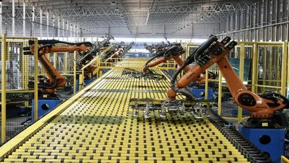

2022郑州工博会：河南前三季度GDP为44016.24亿元：同比增长7.1%
首页 / 2022郑州工博会：河南前三季度GDP为44016.24亿元：同比增长7.1%10月20日，据河南省统计局消息，2021年前三季度全省经济运行情况公布。根据地区生产总值统一核算结果，前三季度全省地区生产总值44016.24亿元，同比增长7.1%，比上半年回落3.1个百分点。省统计局方面分析，虽然前三季度全省主要经济指标增速有所回落，但同时也要看到，全省经济恢复态势持续，灾情疫情对经济运行的影响在9月份有所减弱，部分指标增速比8月份有所加快，创新转型仍在加快推进，民生大局总体稳定，表明我省经济底盘稳、活力足、韧性强，长期向好的基本面没有改变。

2021年前三季度全省经济运行情况
三季度以来，严重洪涝灾害、新冠肺炎疫情等因素对我省经济产生了较大冲击，全省经济运行遇到前所未有的严峻挑战与考验，同时受上年基数逐步抬高影响，主要指标增速出现不同程度回落。面对不利局面，全省上下坚决贯彻习近平总书记重要指示精神，深入落实李克强总理在河南考察时的讲话精神，统筹推进疫情防控、灾后恢复重建和经济社会发展各项工作，经济运行总体保持恢复态势。根据地区生产总值统一核算结果，前三季度全省地区生产总值44016.24亿元，同比增长7.1%，比上半年回落3.1个百分点。
种植业受洪灾影响明显，畜牧业快速增长。在遭受历史罕见的洪涝灾害影响后，全省积极开展改种补种和灾后重建，尽力减少损失，农业生产逐步恢复。目前，秋作物已基本收获完毕，秋种正在有序开展。种植业受影响较大。前三季度，全省蔬菜、瓜果、花生产量同比分别下降0.3%、6.5%、0.8%；尽管秋粮有一定程度减产，但全年粮食总产量保持在1300亿斤以上仍有一定基础。畜禽业生产持续向好。前三季度，全省生猪出栏4121.57万头，增长41.2%；牛、羊、家禽出栏分别增长3.1%、1.9%、7.5%。9月末，全省生猪存栏4042.92万头，同比增长13.0%，已恢复到2017年末生猪存栏水平的92.1%。
工业生产增速有所放缓，主导产业支撑有力。前三季度，全省规模以上工业增加值增长7.9%，比上半年回落2.6个百分点。八成以上行业实现增长。前三季度，40个工业行业大类中有34个实现增长，行业增长面85.0%。消费品制造业生产略有回落。前三季度，全省消费品制造业增加值增长9.0%，比上半年回落0.9个百分点。能源原材料工业回落明显。受电力供应紧张、价格倒挂等因素影响，前三季度全省能源原材料工业增加值增长3.2%，比上半年回落4.3个百分点，影响全省规上工业增速回落1.8个百分点。五大主导产业支撑作用明显。前三季度，全省五大主导产业增加值增长11.4%，增速高于全省工业平均水平3.5个百分点，拉动全省规上工业增长5.2个百分点，对全省工业增长的贡献率较上半年提高11.3个百分点。先进制造业快速增长。前三季度，全省工业战略性新兴产业、高技术制造业增加值分别增长16.2%、27.0%。部分技术含量高以及与低碳转型相关的工业品产量快速增长。前三季度，全省服务机器人、电子计算机整机、智能电视产量分别增长45.1倍、10.6倍、1.2倍，新能源发电量、太阳能工业用超白玻璃、新能源汽车、工业机器人产量分别增长36.6%、29.8%、29.4%、23.5%。多数省辖市增长较快。前三季度有12个省辖市规上工业增速高于全省平均水平，其中郑州、三门峡、南阳、濮阳、平顶山、信阳等6个省辖市增速超过两位数。
服务业多数行业增速明显回落，金融业平稳增长。受洪灾、疫情等因素影响，人员出行受限、经济活动减少，交通运输、旅游、酒店、餐饮等“面对面交互”式服务业受影响较大。1-8月，全省规模以上服务业营业收入增长17.9%，比上半年回落8.4个百分点。交通运输、邮政电信增速显著回落。1-9月，全省货物、旅客周转量分别增长24.2%、15.8%，比上半年分别回落12.9、28.2个百分点。全省邮政、电信业务总量分别增长30.5%、33.1%，比上半年分别回落7.4、1.1个百分点；全省快递业务总量、快递业务收入分别增长47.9%和33.2%，比上半年分别回落16.7、8.3个百分点。金融业平稳增长。9月末，全省金融机构人民币存、贷款余额分别增长8.7%、11.7%，分别比6月末提高0.1、0.2个百分点。
固定资产投资增速有所放缓，工业投资增速持续加快。前三季度，全省固定资产投资增长5.1%，比上半年回落2.7个百分点。民间投资增速略有回落。前三季度，全省民间投资增长4.5%，比上半年回落1.5个百分点。基础设施投资出现负增长。7月份以来，全省基础设施投资增速持续低于全部投资增速，前三季度基础设施投资增速由正转负，同比下降0.2%，比上半年回落9.8个百分点。房地产开发持续低迷。前三季度，全省房地产开发投资增长5.5%，比上半年回落6.0个百分点，商品房销售面积、销售额分别增长2.4%、3.4%，比上半年分别回落11.9、15.8个百分点。工业投资保持较快增长势头。随着“万人助万企”等多项惠企政策落地生效，企业生产经营中遇到的困难和问题不断化解，企业投资信心有所增强，前三季度全省工业新开工项目同比增加586个，巩固了全省工业投资自6月份以来持续加快的势头。前三季度全省工业投资增长11.1%，比上半年提高3.4个百分点。大多数省辖市增长较快。前三季度，有15个省辖市固定资产投资增速高于全省平均水平，其中开封、漯河、安阳、鹤壁、三门峡、信阳、南阳、周口、新乡、驻马店等10个省辖市增速超过两位数。
市场销售增速明显回落，新兴消费表现较为活跃。前三季度，全省社会消费品零售总额增长11.1%，比上半年回落6.0个百分点；其中限额以上批发零售业、住宿餐饮业零售额分别增长10.5%、16.2%，比上半年分别回落7.9、14.6个百分点。汽车类、石油及制品类消费增速持续回落。受汽车产能供应紧张、居民外出活动减少等因素影响，前三季度全省限额以上汽车类、石油及制品类零售额分别增长12.4%、8.2%，比上半年分别回落14.0、2.5个百分点。汽车类和石油及制品类零售额合计占全省限额以上单位零售额的近五成，其增速持续回落对全省消费增速回落产生明显影响。近八成商品零售保持增长。前三季度，在23类限额以上商品中有18类商品零售额同比增长，占比78.3%。基本生活类消费保持平稳。全省着力稳定市场供应、确保居民基本生活，前三季度限额以上粮油食品类、饮料类、日用品类商品零售额分别增长10.2%、14.4%和18.2%。新兴消费表现较为活跃。前三季度，新能源汽车、可穿戴智能设备商品零售额分别增长101.9%、29.2%，限额以上批发零售企业通过公共网络实现的零售额增长21.5%。多数省辖市增长较快。前三季度有12个省辖市社会消费品零售总额增速高于全省平均水平。
虽然前三季度全省主要经济指标增速有所回落，但同时也要看到，全省经济恢复态势持续，灾情疫情对经济运行的影响在9月份有所减弱，部分指标增速比8月份有所加快，创新转型仍在加快推进，民生大局总体稳定，表明我省经济底盘稳、活力足、韧性强，长期向好的基本面没有改变。
第一，经济延续恢复态势，两年平均增速保持增长。受上年同期基数抬升影响，以及灾情疫情的冲击，前三季度全省经济同比增速虽比上半年有所回落，但主要指标两年平均增速仍保持增长，其中地区生产总值两年平均增长3.7%，规模以上工业增加值两年平均增长3.8%，固定资产投资两年平均增长4.3%，社会消费品零售总额两年平均增长1.7%，表明全省经济复苏进程基本经受住了特大洪涝灾害和聚集性疫情等不利因素的严峻考验。
第二，灾情疫情对经济运行的影响在9月份有所减弱，部分指标增速环比加快，与全国差距缩小、进位前移。9月份，全省规模以上工业增加值增长3.0%，比8月份提高1.5个百分点；社会消费品零售总额增长2.7%，比8月份提高7.1个百分点。前三季度，全省规模以上工业增加值、固定资产投资、社会消费品零售总额两年平均增速分别比前8个月提高0.1、0.1和0.3个百分点。前三季度，全省规模以上工业增加值、固定资产投资、社会消费品零售总额同比增速与全国平均水平的差距分别比上半年缩小1.5、2.6和0.6个百分点，其中规模以上工业增加值、固定资产投资在全国的位次均比上半年前移2位。
第三，经济结构调整优化，创新转型加快推进。一是产业结构不断优化。前三季度，全省服务业增加值占地区生产总值的比重为48.4%，制造业增加值占地区生产总值的比重为29.2%，均比上年同期提高0.2个百分点；工业战略性新兴产业、高技术制造业增加值占规上工业的比重分别为23.5%、10.9%，比上年同期分别提高2.0、1.2个百分点。二是需求结构继续改善。前三季度，全省高技术制造业投资占工业投资的比重为11.5%，比上年同期提高2.0个百分点；全省体育娱乐用品类、文化办公用品类、书报杂志类等升级类商品零售额增速分别高于限额以上商品零售额增速10.0、6.1、5.9个百分点。三是绿色发展持续推进。1-8月全省单位工业增加值能耗同比下降5.02%，降幅比上半年扩大2.47个百分点。
第四，就业总体稳定，居民消费价格温和上涨。据省人社厅统计，前三季度全省城镇新增就业97.97万人，城镇失业人员再就业29.10万人，新增农村劳动力转移就业40.14万人，分别完成年度目标任务的89.1%、116.4%、100.3%。据河南调查总队监测，前三季度全省居民消费价格（CPI）同比上涨0.8%，其中食品烟酒、居住、交通通信、教育文化娱乐、医疗保健价格分别同比上涨0.1%、0.5%、2.1%、3.9%、0.4%，衣着、生活用品及服务、其他用品及服务价格分别同比下降0.8%、0.1%、2.0%。特别是猪肉类价格降幅较大，据省地调队监测，9月份全省猪后腿肉为12.18元/斤，同比下降57.8%；猪五花肉为12.51元/斤，同比下降56.8%；猪小排为21.15元/斤，同比下降33.0%。
三季度以来，虽然我省采取了一系列举措促进经济恢复、助力灾后重建，但灾情疫情叠加对经济恢复产生明显不利影响，生产需求两端疲弱，实体经济困难增加，全省经济下行压力明显加大。要看到尽管我省经济发展遇到了严峻挑战和考验，但无论是洪灾还是疫情，对经济运行的影响都是短期的、也是外在的，我省长期积累的比较优势没有变化、经济长期向好趋势没有改变，发展的韧性、动力、活力依然较强；同时也要清醒地认识到，我省灾后重建、疫后重振的过程仍需时日。下一阶段，要全面贯彻落实省委十届十三次全会和省委工作会议精神，坚持稳中求进工作总基调，坚持统筹疫情防控、灾后恢复重建和经济社会发展，充分发挥我省区位明显、产业完备、市场广阔等优势，采取超常规措施加快经济发展，着力释放内需潜力，巩固经济恢复成效，力争完成经济社会发展各项年度目标。（河南省统计局网站）